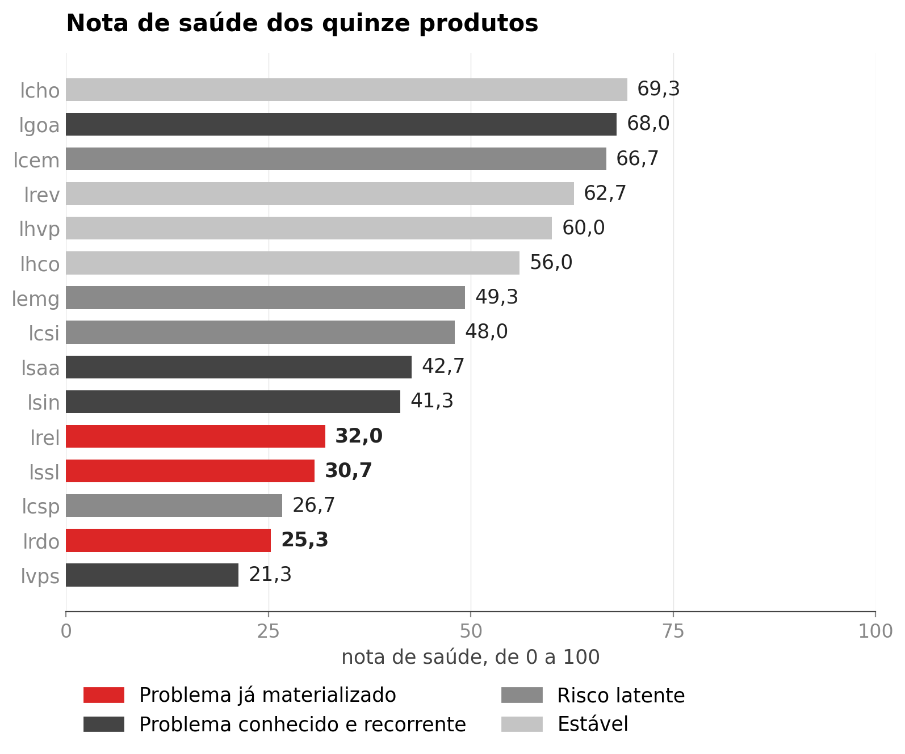

<style>
/* ═══ slide 17 · onde agir primeiro ══════════════════════════════════════════
   O segundo diferencial do produto: uma nota de saúde de 0 a 100 por produto,
   que responde à pergunta que a operação faz de manhã — por onde começo?

   O objeto é o ranking dos quinze produtos, que é o que a tela mostra. Foi
   escolhido depois de julgar o plano de quadrantes: elegante, mas os rótulos
   colidiam e ele criava uma contradição na sala, porque o produto de pior nota
   não cai no quadrante "agir primeiro". A taxonomia dos quadrantes fala do TIPO
   do problema; a nota fala do TAMANHO. O ranking não precisa dessa explicação.

   O gráfico fica à direita e o texto à esquerda, ao contrário do slide 6, para
   os dois não parecerem o mesmo molde.

   Os três produtos em vermelho são onde o problema já se materializou, e estão
   nomeados no slide com a nota: é a resposta concreta à pergunta do título.
   Códigos de produto são os do dataset, os mesmos que a tela usa.

   Figura em dpi 200, de _figuras_saude.py.
   ══════════════════════════════════════════════════════════════════════════ */
.sau .body{padding-top:14px}
.sau .tt{font-size:52px;letter-spacing:-1.9px}

.sau .cena{flex:1;display:flex;align-items:center;gap:56px;margin-top:12px;
  min-height:0}
.sau .lado{flex:1;min-width:0;display:flex;flex-direction:column}
.sau .quadro{padding:20px 24px;flex-shrink:0}
.sau .fig{display:block;width:672px}

.sau .lado .v{font-size:132px;font-weight:900;letter-spacing:-5.4px;line-height:.84;
  color:var(--bad);font-variant-numeric:tabular-nums}
.sau .lado .k{font-size:19px;line-height:1.42;color:var(--tx);margin-top:18px;
  max-width:26ch}
.sau .lado .k b{color:var(--head);font-weight:700}

/* os três, nomeados, com a nota */
.sau .tres{margin-top:34px;border-top:1px solid #DCE4EF}
.sau .tres .pr{display:flex;align-items:baseline;gap:16px;padding:13px 0;
  border-bottom:1px solid #DCE4EF}
.sau .tres .pr i{display:block;width:10px;height:10px;border-radius:3px;
  background:var(--tx2);flex-shrink:0;align-self:center}
.sau .tres .pr b{font-family:var(--mono);font-size:17px;font-weight:500;color:var(--head);
  width:64px}
.sau .tres .pr span{font-size:15px;color:var(--tx2);flex:1}
.sau .tres .pr em{font-style:normal;font-size:20px;font-weight:800;color:var(--head);
  font-variant-numeric:tabular-nums}

.sau .fecho{display:flex;align-items:flex-start;gap:12px;margin-top:auto;
  padding-top:20px;border-top:1px solid #DCE4EF;font-size:16.5px;line-height:1.45;
  color:var(--tx)}
.sau .fecho .ic{width:20px;height:20px;color:var(--accent);margin-top:2px;flex-shrink:0}
.sau .fecho b{color:var(--head);font-weight:700}
</style>

<section class="slide light sau" data-slide="17" data-var="a" data-quem="hygor">
  <div class="mesh"></div><div class="grid-bg"></div>
  <div class="hd">
    <div class="bi"><svg viewBox="0 0 28 28" fill="none"><path d="M6 22L12 14L16 17L22 8" stroke="#fff" stroke-width="2.2" stroke-linecap="round" stroke-linejoin="round"/><circle cx="22" cy="8" r="3" stroke="#3B82F6" stroke-width="1.5"/><circle cx="22" cy="8" r="1.2" fill="#3B82F6"/></svg></div>
    <div class="bn">Cronos</div><span class="bt">BANCA FINAL &middot; 15/09/2026</span>
    <div class="tag">15 produtos &middot; nota de 0 a 100</div>
  </div>
  <div class="body">
    <span class="eb"><span class="rv" style="--d:240ms">Diferencial 2 &middot; saúde por produto</span></span>
    <h1 class="tt"><span class="mask" style="--d:340ms"><span>Onde agir primeiro</span></span></h1>

    <div class="cena">
      <div class="lado">
        <span class="v rv" style="--d:900ms"><span class="ct" data-to="21.3" data-dec="1" data-delay="1080">0,0</span></span>
        <p class="k rv" style="--d:1060ms">é a nota do produto que mais precisa de atenção, numa escala em que o melhor tem <b>69,3</b></p>
        <div class="tres">
          <div class="pr rv" style="--d:1300ms"><i></i><b>lvps</b><span>taxa de 2,9%, a maior das quinze</span><em>21,3</em></div>
          <div class="pr rv" style="--d:1420ms"><i></i><b>lrdo</b><span>68% de problemas inéditos, o maior dos quinze</span><em>25,3</em></div>
          <div class="pr rv" style="--d:1540ms"><i></i><b>lcsp</b><span>metade dos problemas é inédita e a taxa sobe</span><em>26,7</em></div>
        </div>
      </div>

      <div class="quadro cartao rv3" style="--d:620ms">
        
      </div>
    </div>

    <div class="fecho rv" style="--d:1800ms">
      <svg class="ic" viewBox="0 0 24 24"><circle cx="12" cy="12" r="9.4"/><path d="M12 7.6v4.8"/><path d="M12 16.2h.01"/></svg>
      <span>A <b>posição</b> diz o tamanho do problema e a <b>cor</b> diz o tipo, que é o que muda a ação. A nota junta cinco medidas das duas prioridades, e a tela mostra P2 e P3 separados.</span>
    </div>
  </div>
  <div class="ft"></div>
</section>
